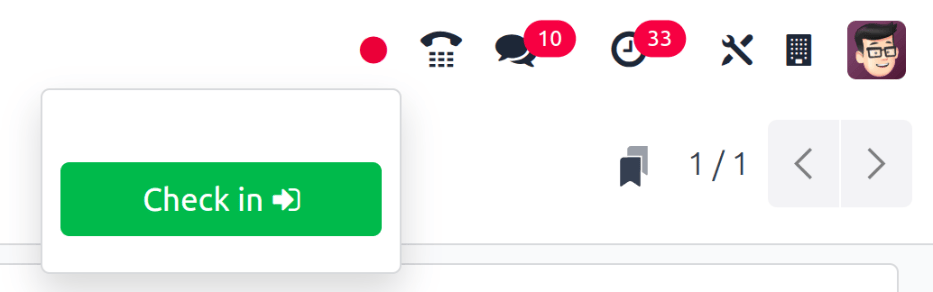
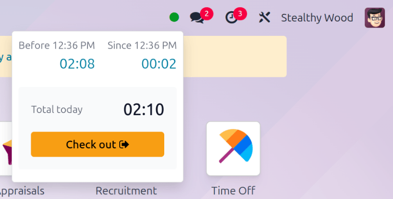
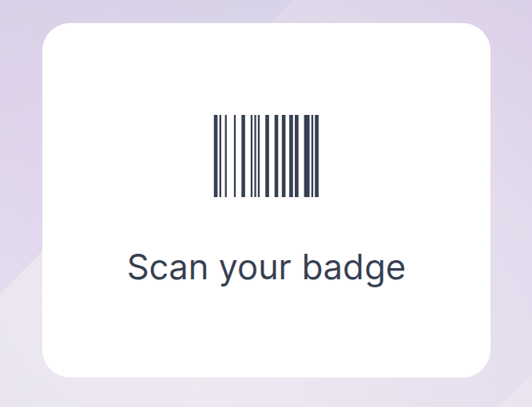
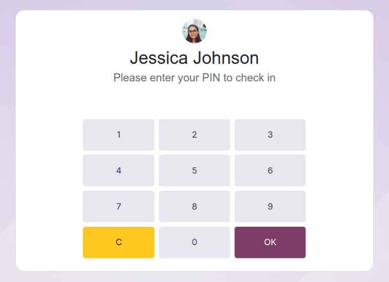
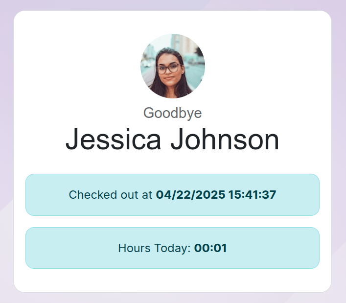
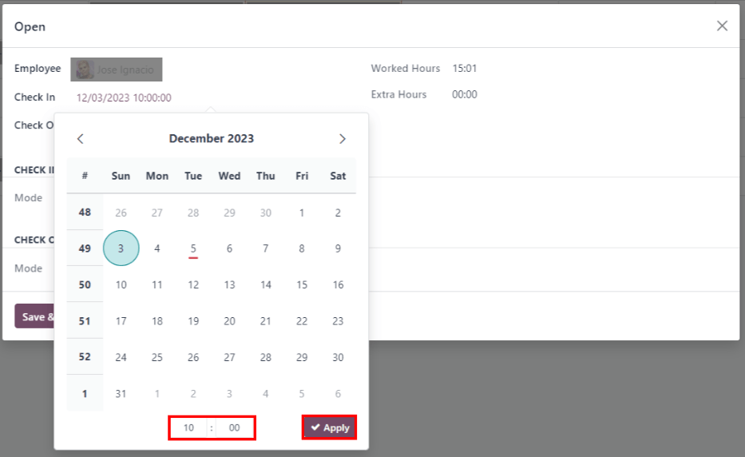
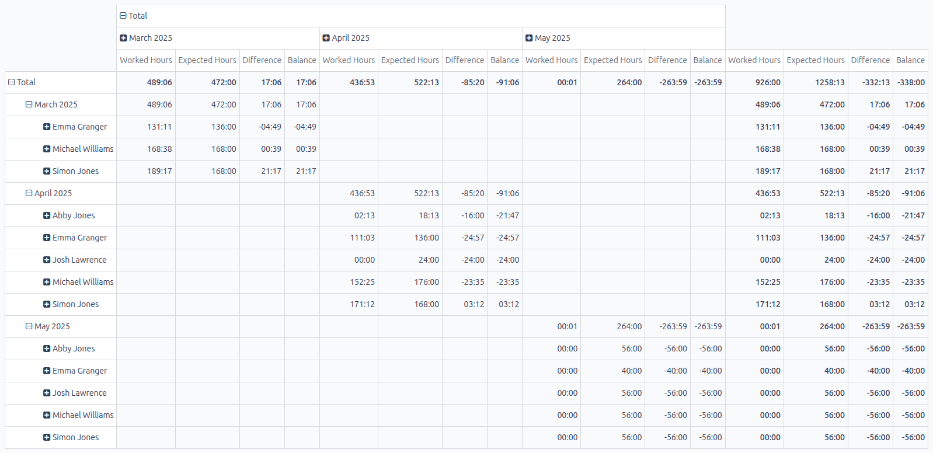

Attendances¶
Odoo's Attendances application functions as a time clock. Employees are able to check in and out of work using a dedicated device in kiosk mode, while users are also able to check in and out of work directly from the database. Managers can quickly see who is available at any given time, and create reports to see everyone's hours, and gain insights on which employees are working overtime, or checking out of work earlier than expected.
Access Rights¶
It is important to understand how the different access rights affect what users can access in the Attendances application.
Every user in the database is always able to access their own information on the dashboard, and can check in and out directly from the database. Access to all the other features is determined by access rights.
To see what access rights a user has, navigate to the , and click on an individual user. The Access Rights tab is visible by default. Scroll down to the Human Resources section to see the setting. For the Attendances field, the options are either to leave the field blank, or select Administrator.
If the Administrator option is selected, the user has full access to the entire Attendances application, with no restrictions. They can view all employee attendance records, enter kiosk mode from the application, access all reporting metrics, and make modifications to the settings.
If left blank, the user can only view their own information on the Attendances application dashboard, and can view their own personal attendance records under the reporting feature. Everyone else's attendance records will be hidden from view on the report. There is no access to either the kiosk mode or the configuration menu.
Approvers¶
The only other scenario where different information may be accessible in the Attendances application is for approvers. If a user does not have administrative rights for the Attendances application, but they are set as an employee's approver for the Attendances application, that user will be able to view the attendance records for that specific employee, as well as make modifications to that employee's attendance records (when necessary). This applies to all employee's the user is listed as the Attendances application approver. Approvers are typically managers, though this is not necessary.
To see who the attendance approver is for an employee, navigate to the and click on the specific employee. Click on the Work Information tab, and scroll to the Approvers section, and check the Attendance field. The person selected will be able to view that employees' attendance records, both on the Attendances application dashboard as well as in the attendance reports, and make modifications to their records.
Configuration¶
There are very few configurations needed in the Attendances application. Determining how employees check in and out, defining how the kiosks function, and determining how extra hours are computed are all set in the Configuration menu. Navigate to the to access the configuration menu.
Modes¶
Kiosk Mode: using the drop-down menu, select how an employee checks in when using a kiosk. Options are Barcode/RFID, Barcode/RFID and Manual Selection, or Manual Selection.
重要
The Barcode application does not need to be installed in order to use one of the Barcode/RFID settings.
Attendances from Backend: activate this selection to allow users to check in and out directly from the Odoo database. If this is not activated, users must use a kiosk to check in and out of work.
Kiosk Settings¶
This section only needs to be configured if employees use kiosks for checking in and out. If kiosks are not being used, modifying any of these fields will not adversely affect the functionality of the Attendances application.
Barcode Source: this setting appears if either of the two Barcode/RFID selections were configured for the Kiosk Mode setting. Select how barcodes are scanned at the kiosk, either with a dedicated barcode Scanner, or the device's Front Camera, or Back Camera.
Employee PIN Identification: activate this option if employees should use a unique PIN to check in. PINs are configured on each individual employee record. Refer to the Add a new employee documentation for more information on setting up PINs.
Display Time: set the duration (in seconds) the check in and check out confirmation screen remains on the kiosk before going back to the main check in screen.
Attendance Kiosk Url: Odoo generates a unique web address (URL) in order to use a device as a kiosk without having to sign in to the Odoo database. When setting up a kiosk device, navigate to this unique web address in a web browser to present the Attendances application kiosk.
重要
These kiosk URLs are not secured with any type of access code. Anyone who has the URL can access the Attendances application kiosk. If the URL is compromised for any reason, such as in the event of a security breach, click Generate a new Kiosk Mode URL, located beneath the link, to generate a new URL and update the kiosk(s) accordingly.
Extra Hours¶
Count of Extra Hours: enable this box to allow employees to log extra hours beyond their set working hours (sometimes referred to as overtime). Activating this selection displays the following settings as well. If this is not activated, no other configurations appear.
Start From: the current date is automatically entered in this field. If desired, click on this field and use the calendar selector to modify the start date that extra hours will be logged.
Tolerance Time In Favor Of Company: enter the amount of time, in minutes, that will not count towards an employee's overtime. When an employee checks out, and the extra time logged is below the specified minutes, the extra time will not be counted as overtime for the employee.
Tolerance Time In Favor Of Employee: enter the amount of time, in minutes, that an employee is given, that will not adversely affect their attendance if they log less time than their working hours. When an employee checks out, and the total time logged for the day is less than their specified working hours, and less than this specified grace period, they will not be penalized for their reduced hours.
Display Extra Hours: activate this box to display the extra hours logged by an employee when they check out with a kiosk, or when a user checks out in the database.
Example
A company sets both of the Tolerance fields to
15minutes, and the working hours for the entire company is set from 9:00 AM to 5:00 PM. If an employee checks in at 9:00 AM, and checks out at 5:14 PM, the extra 14 minutes are not counted towards their overtime. If an employee checks in at 9:05 AM, and checks out at 4:55 PM, even though they logged a total of 10 minutes less than their full working hours, they will not be penalized for this discrepancy.
Check in and out via the database¶
Odoo's Attendances application allows users who are logged into the database to check in and out, without needing to go into the Attendances application, or use a kiosk. For some smaller companies, where every employee is also a user, this feature may be useful.
A user can check in and out on the main database dashboard, as well as in any application. In the upper right corner of the top main menu, which is always visible regardless of what application the user is in, a 🔴 (red circle) or 🟢 (green circle) is visible. Click on the colored circle to reveal the attendance widget, enabling the user to check in and/or out.

Check in¶
If the attendance widget circle is red, this indicates the user is not currently checked in. Click the 🔴 (red circle) and the attendance widget appears, displaying a green Check in -> button.
If the user has not checked in and out already during the current work day, this button is the only visible item in the widget. If the user has previously checked in and out, a Total today field appears above the button, and the total amount of time that has been logged for the day appears beneath that field, in an XX:XX (hours:minutes) format.
Click the Check in -> button to check in. The 🔴 (red circle) in the top menu changes to green, and the widget changes appearance as well. The widget updates to reflect that the user has checked in, by changing the green Check in -> button to a yellow Check out -> button.
Click anywhere on the screen to close the attendance widget.
Check out¶
If the user is checking out for the first time, Since XX:XX (AM/PM) appears at the top of the widget, with the time the user checked in populating the time field. Beneath that line, XX:XX is displayed, indicating the hours and minutes that have elapsed since checking in. As time passes, this value is updated to reflect the hours and minutes that have passed since the user checked in.
If the user has previously checked in and out, additional fields are presented. A Before XX:XX (AM/PM) field appears in addition to the Since XX:XX (AM/PM) field. The time displayed in both of these fields are populated with the most recent check in time, and will match. Beneath the Before XX:XX (AM/PM) field, the previously logged hours are displayed, in an XX:XX (hours:minutes) format.
In addition, beneath both of these fields, a Total today field appears. This field is the sum of both the Before XX:XX (AM/PM) and Since XX:XX (AM/PM) fields, and is the total time that will be logged for the user, if they were to log out at that moment.
As time passes, both the Since XX:XX (AM/PM) and Total today fields are updated live. To check out, click the yellow Check out -> button. The attendance widget updates again, displaying the Total today field with the logged time, and the yellow Check out -> button changes to a green Check in -> button.
ちなみに
There is no limit to the amount of times a user can check in and check out. Users are able to check in and out without any time elapsing (a value of 00:00). Each time an employee logs in and out, the information is stored and appears on the dashboard, including check ins and check outs with no time value.
Kiosk Mode¶
Some companies may opt to use a dedicated device (a laptop or desktop PC, a tablet, or a mobile phone) for employees to check in and check out from. Kiosk mode is used for these scenarios.
重要
If users check in and out using either a badge or an RFID, then an accessible device in kiosk mode must be available in order to check in and check out using these two methods.
Entering kiosk mode is only available for users with specific access rights.
There are three ways that kiosk mode can be activated:
Navigate to the Attendances application, and click Kiosk Mode in the top menu. The device then enters kiosk mode.
Navigate to the . In the Kiosk Settings section, click on the link in the Attendance Kiosk Url field. A new tab opens in kiosk mode. It is recommended to close the database tab to keep the database secure.
Navigate to the . In the Kiosk Settings section, click Copy next to the link beneath the Attendance Kiosk Url field. Paste this URL into a web browser on the kiosk device and navigate to it.
As a security measure, once a device is in kiosk mode, it is not possible to exit kiosk mode and go back into the database without singing back in. To exit kiosk mode, click the back button in the web browser. This logs the user out of the database, and returns to the main log in screen. This prevents anyone from accessing the database, adding another layer of security.
Badge¶
To check in or out using a badge, tap the 📷 (camera) Tap to scan image in the center of the kiosk. Then, scan the barcode on the badge using the method configured in the kiosk settings section of the configuration menu. Options are a dedicated barcode scanning device, or the kiosk's front or back camera. Once the barcode is scanned, the employee is checked in or out, and a confirmation message appears with all the check in or check out information.
RFID¶
To check in or out using an RFID key fob, simply scan the fob with an RFID reader. Once scanned, the employee is then either checked in or checked out, and a confirmation message appears with all the check in or check out information.
Manually¶
Users who do not have a scannable badge or an RFID fob can manually check in and out at a kiosk. Tap the Identify Manually button on the kiosk, and a screen with all the employees that can be checked in or out appears. This is the same view as in the Employees application dashboard. Tap on the person, and they are either checked in or checked out, and a confirmation message appears.
When a large number of employees appear in the list, making scrolling inefficient, there are two ways to quickly find a specific person:
Search...: tap on the Search... field and enter the person's name. As the name is typed in, the matching results are displayed on the screen.
Department: to quickly filter the presented employees, tap on a department to display only those employees that are part of that department. The Departments are listed on the left side of the screen, and the number at the end of each department indicates how many employees are part of the department, and will be displayed when selected.
PIN¶
If the Employee PIN Identification option was activated in the kiosk settings section of the configuration menu, the employee is prompted to enter a PIN when manually checking in or out.
After the employee is selected, a number pad appears with a message. When checking in, (Employee) Welcome! Please enter your PIN to check in appears above the numbers. When checking out, (Employee) Want to check out? Please enter your PIN to check out appears above the numbers.
Tap in the PIN using the number pad, then tap OK when done. The employee is then checked in or out, and a confirmation message appears.
Confirmation message¶
When an employee checks in or out, a confirmation message appears with all the check in or check out
information. When checking in, a welcome message appears, as well as the date and time of check in.
An Hours Previously Today: XX:XX field also appears, displaying any time already logged
for that employee for the day. If no time has already been logged, the value displayed is 00:00.
Beneath the message is an OK button. To exit the screen before the preset time in the
kiosk, tap the OK button.
When checking out, the screen displays a goodbye message, with the date and time of check out, and the total hours logged for the day. Beneath the message is a Goodbye button. To exit the screen before the preset time, tap the Goodbye button.
Overview¶
When entering the Attendances application, the Overview dashboard is presented, containing all the check in and check out information for the signed in user. If the user has specific access rights and/or are approvers for specific employees, then those additional employee's check in and check out information is also visible on the Overview dashboard.
Views¶
To change the view from the default Gantt chart to a list view, click the List icon in the top right of the dashboard, beneath the user's photo. To switch back to the Gantt chart, click the Gantt button, located next to the List button.
The default view presents the current day's information. To present the information for the Week, Month, or Year, click on the Day button to reveal a drop-down, displaying those other options. Select the desired view, and the dashboard will update, presenting the selected information. To change the Day, Week, Month, or Year presented, click the left or right arrow buttons on either side of the drop-down button. To jump back to a view containing the current day, click the Today button. The refreshed the dashboard, presenting information containing the current day's information.
In the Day view, the column for the current hour is highlighted in yellow. If the Week or Month view is selected, the column for the current day is highlighted. If the Year view is selected, the current month is highlighted.

Any entries that have errors appear in red, indicating they need to be resolved by a user with the proper access rights and/or are approvers for the employee(s) with the errors.
Filters and Groups¶
To filter the results in the dashboard or to present different groups of information, click the drop-down button in the Search bar above the dashboard, then select one of the available Filters or Group By options. There are several pre-configured filters and groups to choose from, as well as an option to create custom ones.
Filters¶
The default filters that can be selected are:
My Attendances: this filter only presents the user's attendance data.
My Team: this filter presents the attendance data for the user's team.
At Work: this filter displays the attendance data for everyone currently checked in.
Errors: this filter displays any entries with errors that need to be resolved.
Check In: this filter has a drop-down to further select a specific time period. Select the desired time period from the options presented, a specific month, quarter, or year.
Last 7 days: this filter presents the attendance data for the last seven days.
Add Custom Filter: create a custom filter using the pop-up that appears when this is selected.
Groups¶
The default groups that can be selected are:
Check In: this grouping presents a drop-down menu containing the following time period options: Year, Quarter, Month, Week, and Day. Selected the time period to display all the check-in information, grouped by the selected time period.
Employee: this group presents the attendance data organized by employee.
Check Out: this grouping presents a drop-down menu containing the following time period options: Year, Quarter, Month, Week, and Day. Selected the time period to display all the check-out information, grouped by the selected time period.
Add Custom Group: this option displays a drop-down menu with a variety of options to group the attendance data by, including City, Country, Mode, and IP Address.
Errors¶
Entries that contain an error appear on the dashboard in red. In the Gantt view, the entry appears with a red background. If in the List view, the entry text appears in red.
An error typically occurs when an employee has checked in but has not checked out within the last 24 hours, or when an employee has a check in and check out period spanning over 16 hours.
To fix the error, the attendance entry must be modified or deleted. Click on the entry to reveal a pop-up containing the details for that particular entry. To modify the Check In and/or Check Out information, click on the Check In or Check Out field and a calendar selector appears. Click on the desired date, then use the time selector beneath the calendar to select the specific time for the entry. When the information is correct, click Apply.
When all the information on the pop-up is correct, click Save & Close. When the entry no longer has an error, the entry appears in gray instead of red.
To delete an entry, click Remove on the pop-up instead of making modifications to the entry.
Reporting¶
To view attendance reports, click Reporting in the top menu. The default report displays each employee's attendance information for the past 3 months, in a Line Chart.
The default view is a Graph. To view the data in a pivot table, click the Pivot Table button on the top right of the report. To switch back to the graph view, click the Graph button, located next to the Pivot Table button.
To present different information, adjust the filters and groups in the same way as in the Overview dashboard.
The data can be presented in either a Bar Chart, Line Chart, Pie Chart, Stacked chart, or in Descending or Ascending order. To change the view to any of these charts, click the corresponding button above the displayed chart.
To change the Measures, click the Measures button and select the desired measure from the drop-down menu.
The report can also be inserted into a spreadsheet. Click the Insert in Spreadsheet button and a pop-up appears. Select the desired spreadsheet, and click Confirm.
